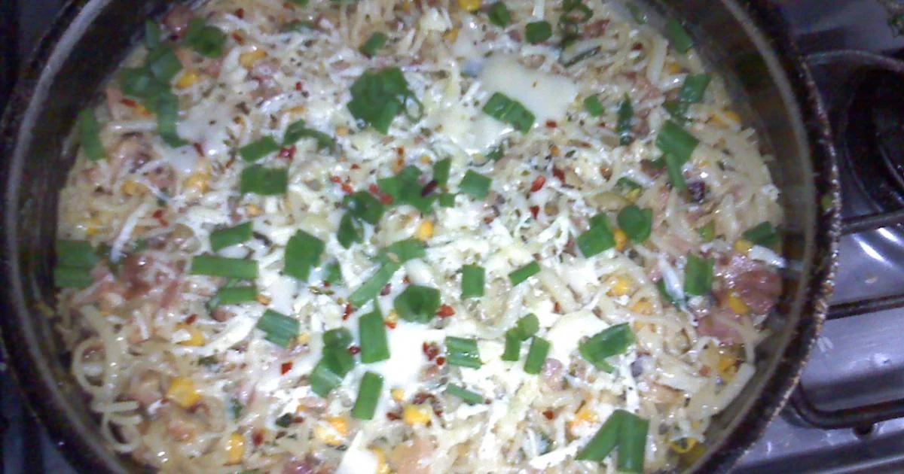

Receita de macarrão turbinado

Sobre o prato:
Mano, apenas faça.
Ingredientes:
- Macarrão né, já que o prato é de macarrão
- uns 3 presuntos e queijo ralado
- Colher
- Paciência
Passos:
- Primeiro, pegue uma frigideira e frite o bacon
- Após isso, bota a manteiga na panela até derreter, depois bota o ovo e espera um pouco
- Agora é só esperar o ovo fritar e botar um arroz
- Pronto, agora vc coloca o macarrão que você pediu e marcha no progresso